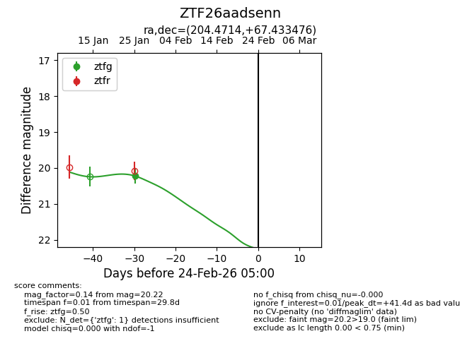
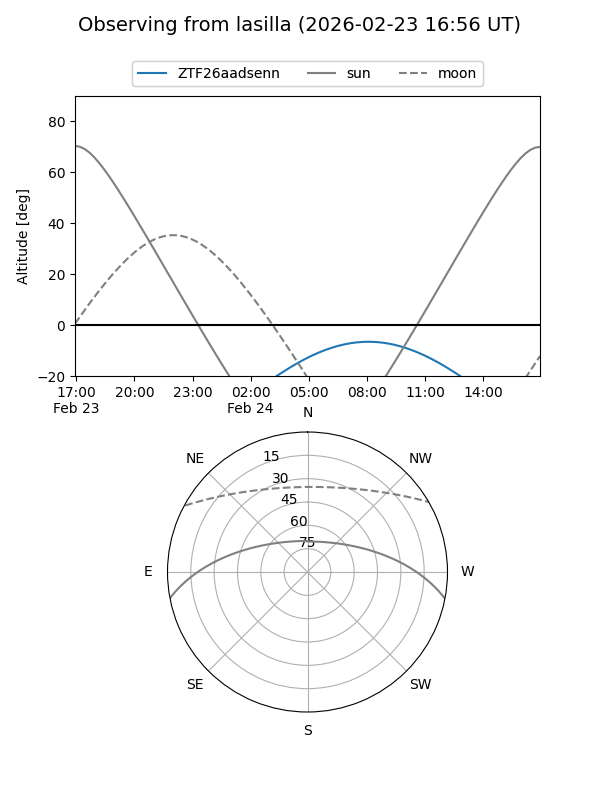
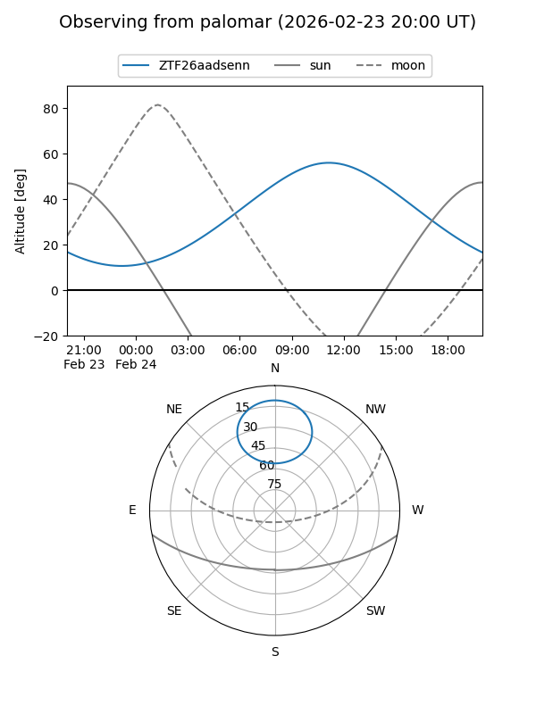
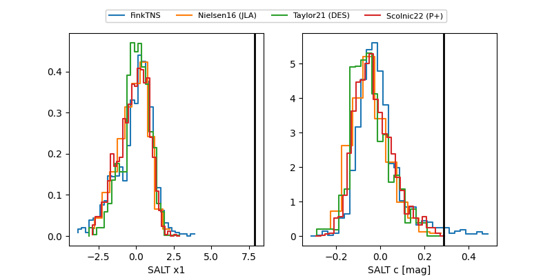

ZTF26aadsenn
Target ZTF26aadsenn at 2026-01-25 10:06
Aliases and brokers:
FINK: link
Lasair: link
ALeRCE: link
alt names
ZTF26aadsenn (ztf,fink_ztf)
Coordinates:
equatorial (ra, dec) = 204.4714,+67.43348
equatorial (HMS+DMS) = 13:37:53.14,+67:26:00.51
galactic (l, b) = (116.1595,+49.07950)
Flags:
Photometry:
last ztfg=20.22
1 ztfg detections
Lightcurve

Visibility


Additional plots
